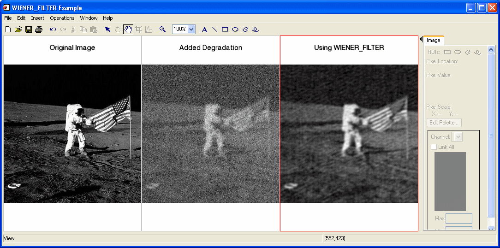

The WIENER_FILTER function reduces degradation and noise in an image by statistically comparing it with an undegraded image. This method assumes that images and noise are random variables and the objective is to minimize the mean square error between the image ƒ and an estimate. The mean square error is calculated by the following equation:
where E(X) is the expected value of X .
The minimum is calculated by the following equation:
where H(u,v) is the degradation function.
is the complex conjugate of the degradation function. In
the numerator is the noise power spectrum and the denominator is the undegraded image power spectrum. This quotient can be interpreted as the inverse of the signal-to-noise ratio.
is the estimate of the frequency domain of the undegraded image.
This routine is written in the IDL language. Its source code can be found in the file wiener_filter.pro in the lib subdirectory of the IDL distribution.
Result = WIENER_FILTER( ImageData , DegradationFunction , CleanPowerSpectrum , NoisePowerSpectrum )
Returns a filtered image double-precision floating-point array of the same dimensions as ImageData .
A two-dimensional array containing the pixel values of the input image.
A two-dimensional array representing the transfer function that describes the degradation of the image.
Degraded images are calculated as noise added to the product of the true image and a degradation function. The equation is G(u,v) = H(u,v)F(u,v) + N(u,v) , where G(u,v) is the observed image in the frequency domain, H(u,v) is the degradation function, F(u,v) is the true image in the frequency domain, and N(u,v) is the noise function in the frequency domain.
A two-dimensional array or scalar representing the power spectrum of the undegraded image. If this value is not available, you can approximate it with the power spectrum of a similar, undegraded image. The Wiener filter is invariant to small differences in the power spectrum of the ideal image. If this quantity is not known, it can often be approximated with a scalar. This value is also called the signal autocorrelation .
A two-dimensional array or scalar representing the noise power spectrum. If it is spectral white noise, the argument is a scalar value. This value is also called the noise autocorrelation .
None
In the following example, we add some binomial noise and atmospheric turbulence to an image and filter it with WIENER_FILTER.
First, we read the file, add some noise, and filter out the noise:
; Read in the file
file = FILEPATH('moon_landing.png', SUBDIR=['examples','data'])
imageOriginal = READ_PNG(file)
; Generate some 10 trial binomial noise.
noise = RANDOMN(SYSTIME(/SECONDS), 300, 300, $
BINOMIAL=[10,.5])*30-150
; Generate some atmospheric turbulence degradation.
xCoords = LINDGEN(300,300) MOD 300 - 151
yCoords = TRANSPOSE(xCoords)
k = 0.0025
degradation = EXP(-k * (xCoords^2 + yCoords^2 ) ^ (5d/6d) )
imageDegraded = degradation*FFT(imageOriginal, $
/CENTER) + FFT(noise, /CENTER)
imageDegraded = REAL_PART(FFT(imageDegraded, /INVERSE, /CENTER))
; Filter the degraded image with the Wiener filter
powerClean = ABS(FFT(imageOriginal, /CENTER))^2
powerNoise = ABS(FFT(noise, /CENTER))^2
imageFiltered = WIENER_FILTER(imageDegraded, degradation, $
powerClean, powerNoise)
Next, we render the result:
; Find the image dimensions so we can display three of them
; side by side in an iImage iTool
dims = [(SIZE(imageOriginal))[1]*3, $
(SIZE(imageOriginal))[2]*1+120]
; Display the original, degraded, and filtered images
IIMAGE, imageOriginal, VIEW_GRID=[3,1], $
VIEW_TITLE='Original Image', DIMENSIONS=dims, $
WINDOW_TITLE='WIENER_FILTER Example', /NO_SAVEPROMPT
IIMAGE, imageDegraded, /VIEW_NEXT, VIEW_TITLE='Added Degradation'
IIMAGE, imageFiltered, /VIEW_NEXT, $
VIEW_TITLE='Using WIENER_FILTER'
; Increase the text size
ISETPROPERTY, 'text*', FONT_SIZE=36

|
7.1 |
Introduced |
ESTIMATOR_FILTER , BANDPASS_FILTER , BANDREJECT_FILTER , LEAST_SQUARES_FILTER